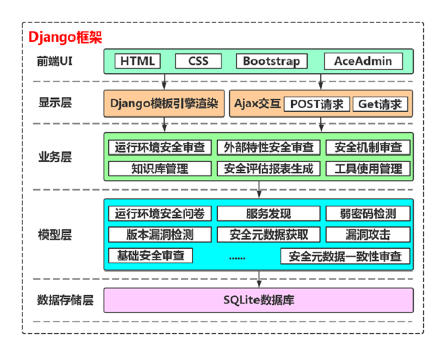
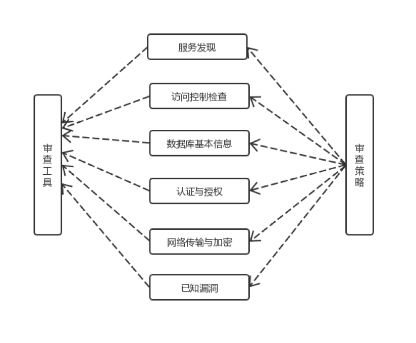

作者: Zeming Wang [email: m15101166628@163.com]
网络信息技术的快速发展，使得数据的种类和规模在人类社会发生了指数级地增长近年来数据量的快速增长，使科学技术迅速更新、进步，商业模式进入到前所未有的崭新时期。大数据技术提高了生产效率，极大地改变了现代人的生活方式，在这个过程当中，也带来了许多的安全挑战，大数据安全已经是我国当前国家安全战略和网络空间安全的重要组成部分，目前，我国网络安全法规与相关的网络安全制度已经明确了对网络产品和服务的安全审查要求。但在特定的产品和服务领域，尤其是大数据平台与大数据服务安全审查方面落实，需要有具体的大数据安全审查方法的指导；与此同时，为提升审查人员的工作效率与安全评估的质量，需要有自动化的安全审查支持工具，本课题将为大数据平台安全审查工具的MongoDB模块进行扩展.
查了目前MongoDB安全审查实施的现状，结合MongoDB和传统数据库的安全性方面的相同点和不同点，构建了MongoDB安全审查指标体系，总结了MongoDB安全审查的内容。完成了MongoDB安全审查工具的设计、实现和测试，并验证了工具的实用性、正确性，为大数据平台MongoDB组件的安全审查提供了高效便捷的解决方案。


1) 服务发现
根据审查员输入的IP地址和端口号，检测对应主机是否已开启相应的MongoDB服务。
2) 访问控制检测
因为MongoDB默认在开发模式下启用，是没有默认打开访问控制的，本检测会检测访问控制是否可用并且启用，若启用对访问控制相关的威胁进行测试。
3) 数据库基本信息和已知漏洞
因为每一个版本的数据库都有相关的安全漏洞，如CVE和CNNVD漏洞，更老版本的数据库甚至没有相关的补丁，因此如果版本过于老旧的，是非常不安全的，工具会对版本等相关数据库信息进行测试，检错是否还存在有已知的安全漏洞。
4) 认证与授权
科学合理的认证方式和授权方式，不仅是数据库也是大数据平台其他产品管理硬件软件的关键，所以工具对认证方式与授权方式进行审查也是非常必要，同时也是保证数据库安全的重要信息。
5) 网络传输与加密
MongoDB本身是支持SSL和加密的，本检测会检测相应的加密选项是否打开，还有服务器端的JS脚本是否关闭，这些配置信息容易被忽略，但是极容易成为被攻击的方式。
Read Code in Wenshuo Zhang's respository